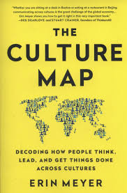
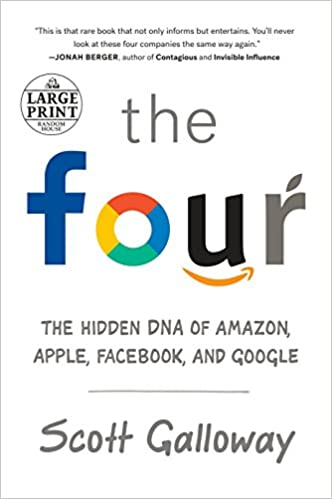
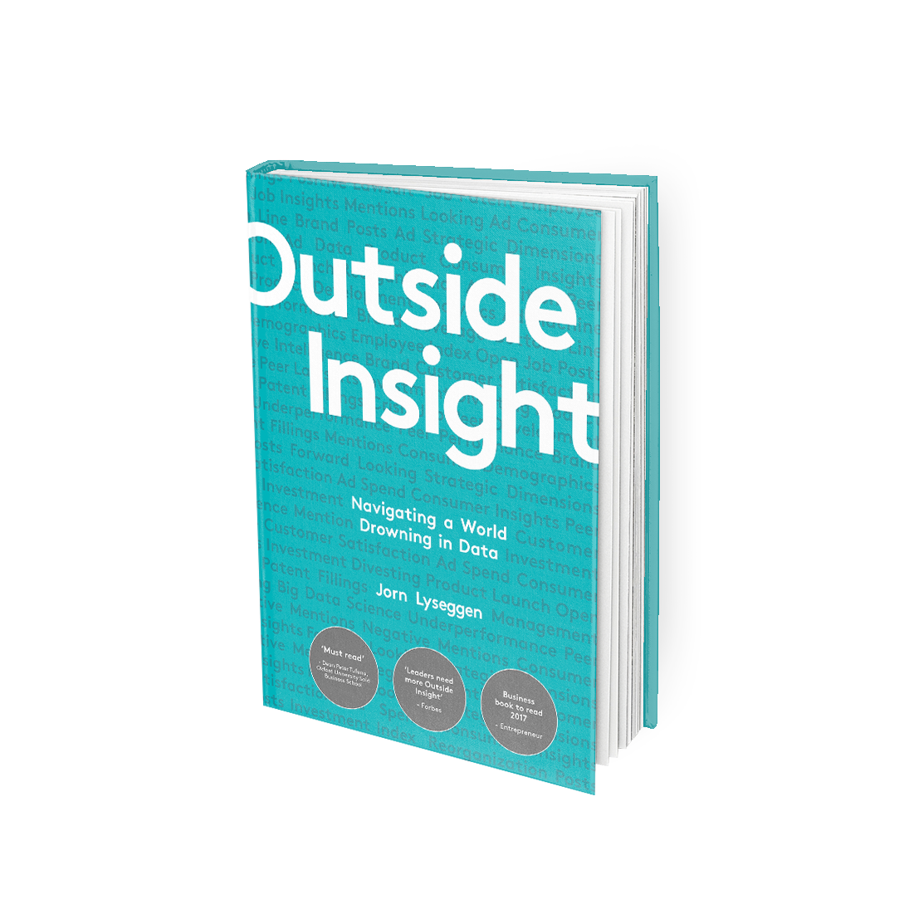

Have you watched all Netflix recommendations already? Then try enjoying the time you have to read on of these cult books that are as good as your series!
FAQ
What if i don't like the books given here?
Luckily there are a lot of books out there that you probably haven't read! You can always let us know the types of books you like and we'll get back to you with some of our favorite recommendations.
I don't want to spend any money on books?
There are lots of ways today that you don't have to spend a lot of money on books. Even if libraries are closed these days Amazon sells second-hand books from 0.98 pounds on already!
GET IN TOUCH
If you would like to share what you have been up to, or submit ideas with a chance of being featured on our website, get in touch with us below.
The Culture Map - Erin Meyer

In a world that is led by different cultures interacting with each other in a business environment, communication is key.
In het book the Culture Map, Erine Meyer helps you navigate the workspace where people from different backgrounds are expected
to work with each other. If you think of it Amercians for example they will usually give some nice comments post a negative one.
Dutch, Germans and Israeli's will go straight to the point however and indicate that was awful. Therefore, even if english is
commonly used there are other factors that are important to succeed in business.
The Four- Scott Halloway

Have you ever wondered how Google, Facebook, Amazon and Apple infiltrated in our lives? Ever thought that instead of going to church
a large number of people ask Google? Than this book is for you! A very intersting view on how they are part of our lives. The book reads
very easily and is comprehensibly written.
Outside Insight: Navigating in a world drawn in data

A book written by Jorn Lyseggen that gives an interesting view on how business should make decison making processes by adapting to a
new digital age. The book contains 17 chapters and is using real time cases to illustrate why business can not solely rely on internal data
and stresses the importance of analysis that contain industry-wide, external data.
Becoming
In Becoming we get a glimpse of Michelle Obama's life through her eyes. We learn how early memories leave an impact at even a yougn age
and that failure is only a feeling before it actually becomes true:"Failure is a feeling long before it becomes an actual result. It’s
vulnerability that breeds with self-doubt and then is escalated, often deliberately, by fear." Attending Princeton Michelle Obama
often wondered who or what she was representing. She shares with us why she chose to stand by her husband during the presidential
elections even though she was never a fan of politics. A book that shows the strengh and determination of Michelle Obama in her own words,
a book worth reading.